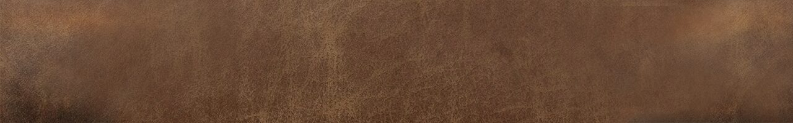

Browser
No account
Open Sidequest at samoff.com/Sidequest and start working.

Pick whichever way suits you. You can switch later, but your data doesn’t travel between versions on its own. You can carry it over with a backup file (see Saving and syncing your data).
No account
Open Sidequest at samoff.com/Sidequest and start working.
Works offline
In a browser that supports it, open Options and choose Install Sidequest. It then opens in its own window and works offline. Some phones don’t show an install button, so use your browser’s Add to Home Screen instead.
Saved to your account
Build your own copy as a Claude Artifact.
Saved to your account
Build your own copy as a Muse Artifact.
A short tutorial walks you through adding a quest, giving it a task, and starting it. To run it, choose Play tutorial in the Welcome box or in the Field guide. You’ll also see a few sample quests so you can look around. When you’re ready for a clean slate, open Options and choose Start fresh.
Your data is saved in your browser on the device you use, and nothing is sent anywhere. That means:
Your data is saved to your own account, so it’s there on every device you sign in to. Claude and Muse keep separate data and don’t sync with each other, and neither reads the browser version’s data. To move quests between versions, save a backup in one and restore it in the other.